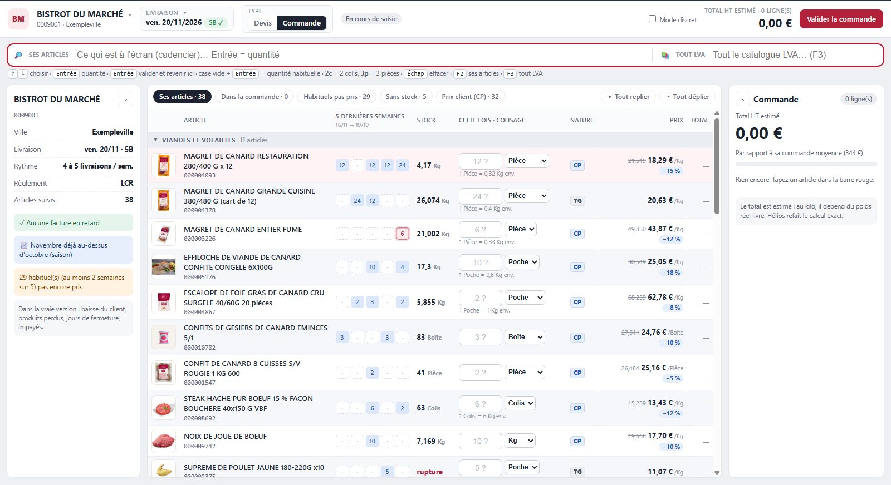

La saisie de commande telle que nous aimerions l'utiliser
Merci pour la présentation de la nouvelle saisie de commande et pour la page d'essai. Chez LVA Distribution, c'est l'écran sur lequel nous passons le plus de temps : la télévente y saisit des dizaines de commandes par jour, souvent au téléphone avec le client. Chaque clic et chaque centimètre d'écran comptent.
Plutôt que de vous envoyer une liste de remarques, nous avons construit une maquette qui fonctionne, sur de vrais articles LVA (photos, unités, colisages) et un client fictif. Elle ne retire rien de ce qu'Hélios sait faire : elle montre comment nous aimerions l'avoir sous les yeux.
Ouvrir la maquette → Le code source
Ce qui compte pour nous
- Une ligne = un article, lisible d'un coup d'œil.Pas de rangée de boutons sur chaque ligne. Les − / + apparaissent au survol de la case quantité, et la quantité reste visible au milieu. Dans la proposition du 10/11, chaque ligne porte une dizaine d'icônes et des + / − permanents : l'œil ne sait plus où se poser.
- Le prix tient dans une seule case.Prix net en gras, tarif barré à côté, remise en pastille. Un clic ouvre une bulle : remise en % ou prix net, et « remettre le prix ». Cinq champs par ligne (prix brut, remise, unité, prix net, marge) prennent la moitié de la largeur pour une information qu'on modifie rarement.
- La nature du tarif en pastille : TG, CP, TS.On voit tout de suite si le prix vient de la grille, d'un accord client ou d'une saisie à la main (en orange).
- Des couleurs douces.La ligne passe en vert pastel quand une quantité est saisie, une ligne sur deux est légèrement teintée, et le rouge est réservé aux alertes. Un vert vif sur toute la ligne fatigue sur une journée de saisie et noie les vraies alertes.
- L'historique en vignettes, avec une alerte utile.Les 5 dernières semaines, la plus récente à gauche. Quand un article n'a pas été repris depuis 5 semaines, sa vignette pulse doucement : le télévendeur pense à le proposer.
- Le colisage se choisit sur la ligne.Pièce, colis ou kilo dans une liste, avec l'équivalence affichée en dessous (« 1 colis = 3,84 kg env. »). Au clavier : 2c = 2 colis, 3p = 3 pièces.
- Le clavier d'abord.Deux barres de recherche : F2 dans les articles du client, F3 dans tout le catalogue. Entrée va à la quantité, une case vide + Entrée reprend la quantité habituelle, les flèches changent de ligne.
- De la place quand on en a besoin.Chaque famille se replie d'un clic (son titre garde le nombre d'articles, ceux commandés et les alertes), et les volets client et commande se replient sur le côté.
- Un bandeau qui sert.Le nom du client ouvre ses livraisons, ses factures et ses tournées. La date de livraison ouvre un calendrier qui montre ses jours de tournée. Devis ou commande se choisit d'un clic.
- Le devis avec remises à la chaîne.En mode devis, une colonne « Remise % » apparaît : on tape, Entrée passe à la ligne suivante, et un bouton enregistre toutes les remises d'un coup. Une remise qui remonterait le prix du client est signalée.
Le code
La maquette tient dans une seule page HTML, sans bibliothèque ni serveur : les données sont en tête du fichier, puis le dessin, le clavier et chaque fonction, commentés en français. Vous pouvez reprendre librement le code et les idées pour Hélios : c'est le but.
Ce n'est pas un produit : rien n'est branché à Hélios et rien n'est envoyé. Le client, les prix, les historiques, les livraisons et les factures sont inventés ; les articles et leurs photos sont ceux de LVA.